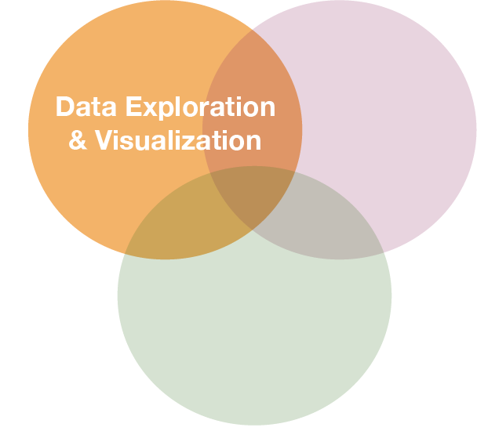
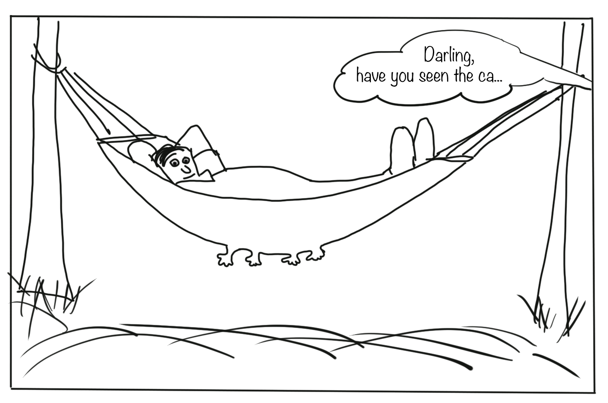

Datenanalyse mit R
6 - Data wrangling - 3.Transformation
Saskia A. Otto
BSH 11/02 - 13/02 2019
3. Data transformation with 'dplyr'

The 'dplyr' package
Makes data manipulation easier and faster
| Typical manipulations | Core functions in dplyr |
|---|---|
| Manipulate observations (rows) | filter(), arrange() |
| Manipulate variables (columns) | select() |
| Summarise observations | summarise() |
| Group observations | group_by(), ungroup() |
| Combine tables | bind_ and join_ functions |
The 'dplyr' package (cont)
Function structure
- First argument is always a data frame or tibble
- Subsequent arguments say what to do with data frame
- Always return a data frame
A demonstration with growth information for 5 fish species
fish_growth <- tibble(
Species = c("Gadus morhua", "Platichthys flesus", "Pleuronectes platessa",
"Merlangius merlangus", "Merluccius merluccius"),
Linf = c(110, 40.8, 54.4, 41.3, 81.7),
K = c(0.4, 0.4, 0.1, 0.2, 0.1)
)
(Linf = average maximum length, K = rate at which the fish approaches Linf)
Image courtesy of the photographers at fishbase.org (Konstantinos I. Stergiou, Jim Greenfield) and uwphoto.com (Rudolf Svensen).
filter() → extract rows that meet logical criteria
Some other helpful functions to ...
source: older version of Data Transformation with dplyr cheat sheet (licensed under CC-BY-SA)
arrange() → sort observations by specific variables
select() → extract columns by name or helper function
Overview of helper functions
source: older version of Data Transformation with dplyr cheat sheet (licensed under CC-BY-SA)
mutate() and transmute() → create new variables
mutate() and transmute()
You can do any calculation with a variable or apply a so-called window function:
source: older version of Data Transformation with dplyr cheat sheet (licensed under CC-BY-SA)
You can do any calculation with a variable as long as it is vectorized. Useful functions are:
source: older version of Data Transformation with dplyr cheat sheet (licensed under CC-BY-SA)
summarise() → reduce variables to values
Useful summary functions
source: older version of Data Transformation with dplyr cheat sheet (licensed under CC-BY-SA)
Your turn...
Import the oceanographic ICES dataset
If you haven't done it before in the date handling section do it now (don't forget to set the working directory beforehand!):
hydro <- read_csv("data/1111473b.csv")
names(hydro) <- c("cruise", "station", "type",
"date_time", "lat", "long", "depth",
"pres", "temp", "psal", "doxy")
Extract from the date_time variable the year, month, and day and save them in separate variables.
Quiz 1: Data manipulation
- Create a subset by filtering month 7 and pres 1.
- Select from this subset only the cruise, station, and day variables.
- Arrange this subset now by day, then by station, and then by cruise.
Questions (solution code will be at the end of the presentation):
- How many stations were sampled on day 2?
- And how many cruises sampled these stations?
Once you have filtered, selected and arranged your subset, print it in the console or use View(your_subset).
6
2
Quiz 2: Data manipulation
Lets try a different approach to a similar question (code is at the end of slides):
- Create a subset by filtering month 2, day 4, and pres 1.
- Select from this subset only the cruise and station variables (this step could also be skipped).
- Summarise the cruise and station variables by calculating the number of unique values with
n_distinct().
- How many stations were sampled on day 4?
- And how many cruises sampled these stations?
8
2
Well done! You managed to calculate the number of sampled stations and cruises for a single day! But what about all the other days?
Devise a strategy for all days or months!
Try to get something like this
## # A tibble: 223 x 4
## month day cruise_count station_count
## <dbl> <int> <int> <int>
## 1 1 12 2 4
## 2 1 13 1 2
## 3 1 14 1 2
## 4 1 15 1 1
## 5 1 19 3 9
## 6 1 20 3 7
## 7 1 21 3 5
## # … with 216 more rows
You get 2 minutes to think of a strategy ...
Solution for group-wise operations:
group_by()takes an existing tbl and converts it into a grouped tbl where operations are performed "by group"ungroup()removes grouping
Principle of group-wise operations
dplyr offers many more functions!
From now on you should constantly look into the cheat sheet:
Cheat sheet is freely available at https://www.rstudio.com/resources/cheatsheets/
Before you can practice your data manipulation skills you will get to know one very usefool tool for more complex operations!!!
The pipe operator
Basic piping with %>%
- The so-called pipe-operator is provided by the magritr package.
- Is part of the core tidyverse so you only need to install 'tidyverse' or any of the tidyverse core packages.
- Simplifies operations!
- Imagine taking the square root of the sums of squares of a data subset in one step:
Basic piping with %>%
- The so-called pipe-operator is provided by the magritr package.
- Is part of the core tidyverse so you only need to install 'tidyverse' or any of the tidyverse core packages.
- Simplifies operations!
- Imagine taking the square root of the sums of squares of a data subset in one step:
sqrt(sum( (hydro$temp[hydro$station == "0010" & hydro$pres %in% c(1,5,10)] -
mean(hydro$temp[hydro$station == "0010" & hydro$pres %in% c(1,5,10)]))^2))
Does that look simple and readable?
With %>% you can couple several function calls sequentially without creating many intermediate objects:
%>%pipes left-hand side values forward into expressions that appear on the right-hand side.- Additional steps can be easily added anywhere in the sequence of operations.
Your turn...
Tell me ...
- Which dplyr function can you use to remove duplicated row values?
- And which dplyr function(s) can you use to count the number of rows in each variable group?
→ These functions can be helpful in the next data manipulation exercises!
More complex data manipulations
With the group_by() function and the pipe operator you will be able to answer the following questions:
Quiz 3
Are the NAs in the dataset related to specific months?
Quiz 4
Which depths were most frequently sampled?
To analyse this it's good to round the pressvariable befor you count the frequency per pressure value. You can use the following functions to do this: round(x, digits), ceiling(x, digits), floor(x, digits)
(the solution code is at the end of the presentation)
Overview of functions you learned today
base: round(), ceiling(), floor()
dplyr: filter(), arrange(), select(), mutate() and transmute(), summarise(), group_by(), ungroup(), count()
magrittr: %>%
How do you feel now.....?
Totally confused?

Tr out ALL the exercises and compare your code and results with the solution code! Read chapter 5 on data transformation and chapter 18 on the pipe operator 'in R for Data Science'.
Totally bored?

Then play around with the full hydro dataset "1111473b.csv" and explore already the hydrographical variables.
Totally content?
Then go grab a coffee, lean back and enjoy the rest of the day...!

Bei weiteren Fragen kontaktieren Sie mich unter:
saskia.otto@uni-hamburg.de
http://www.researchgate.net/profile/Saskia_Otto
http://www.github.com/saskiaotto

Diese Arbeit ist lizensiert unter der
Creative Commons Attribution-ShareAlike 4.0 International License
mit Ausnahme externer
Materialien gekennzeichnet durch die source: Angabe.
Bild auf Titel- und Abschlussfolie: Frühjahrsblüte in der Nordsee
USGS/NASA Landsat:
Spring Color in the North Sea, Landsat 8 - OLI, May 7, 2018
(unter CC0 lizenz)
Solutions
Quiz 1: Data manipulation
h_filt <- filter(hydro, month == 7, pres == 1)
h_sel <- select(h_filt, cruise,station, day)
h_arr <- arrange(h_sel, day, station, cruise)
# View(h_arr) or filter by day
out <- filter(h_sel, day == 2)
out
## # A tibble: 6 x 3
## cruise station day
## <chr> <chr> <int>
## 1 3490 0093 2
## 2 3490 0257 2
## 3 3490 0229 2
## 4 ESLV 012c 2
## 5 ESLV 0038 2
## 6 ESLV 00N8 2
Using the pipe operator:
hydro %>%
filter(month == 7, pres == 1) %>%
select(cruise, station, day) %>%
arrange(day, station, cruise) %>%
filter(day == 2)
Quiz 2: Data manipulation
h_filt <- filter(hydro, month == 2, day == 4, pres == 1)
summarise(h_filt, cruise_nr = n_distinct(cruise),
station_nr = n_distinct(station) )
## # A tibble: 1 x 2
## cruise_nr station_nr
## <int> <int>
## 1 2 8
Using the pipe operator:
hydro %>%
filter(month == 2, day == 4, pres == 1) %>%
summarise(cruise_count = n_distinct(cruise),
station_count = n_distinct(station) )
Quiz 3: Complex data manipulations
Are the NAs in the dataset related to specific months
hydro %>%
select(month, temp, psal, doxy) %>%
group_by(month) %>%
summarise(
t_na = sum(is.na(temp)),
s_na = sum(is.na(psal)),
o_na = sum(is.na(doxy))
) %>%
mutate(sum_na = t_na+s_na+o_na) %>%
arrange(desc(sum_na))
## # A tibble: 12 x 5
## month t_na s_na o_na sum_na
## <dbl> <int> <int> <int> <int>
## 1 10 184 234 1115 1533
## 2 8 310 413 630 1353
## 3 3 115 108 854 1077
## 4 6 155 267 649 1071
## 5 9 123 232 619 974
## 6 7 239 357 372 968
## 7 2 47 82 798 927
## 8 11 46 83 764 893
## 9 5 235 311 330 876
## 10 4 177 200 375 752
## 11 1 73 85 549 707
## 12 12 10 10 249 269
Quiz 4: Complex data manipulations
Which depths are most frequently sampled?
depth_prof <-hydro %>%
transmute(pres2 = ceiling(pres)) %>%
group_by(pres2) %>%
count() %>%
arrange(desc(n)) %>%
print(n = 12)
## # A tibble: 216 x 2
## # Groups: pres2 [216]
## pres2 n
## <dbl> <int>
## 1 5 2370
## 2 10 2232
## 3 1 1880
## 4 20 1797
## 5 15 1736
## 6 40 1609
## 7 30 1565
## 8 0 1524
## 9 50 1246
## 10 25 1083
## 11 35 965
## 12 45 854
## # … with 204 more rows